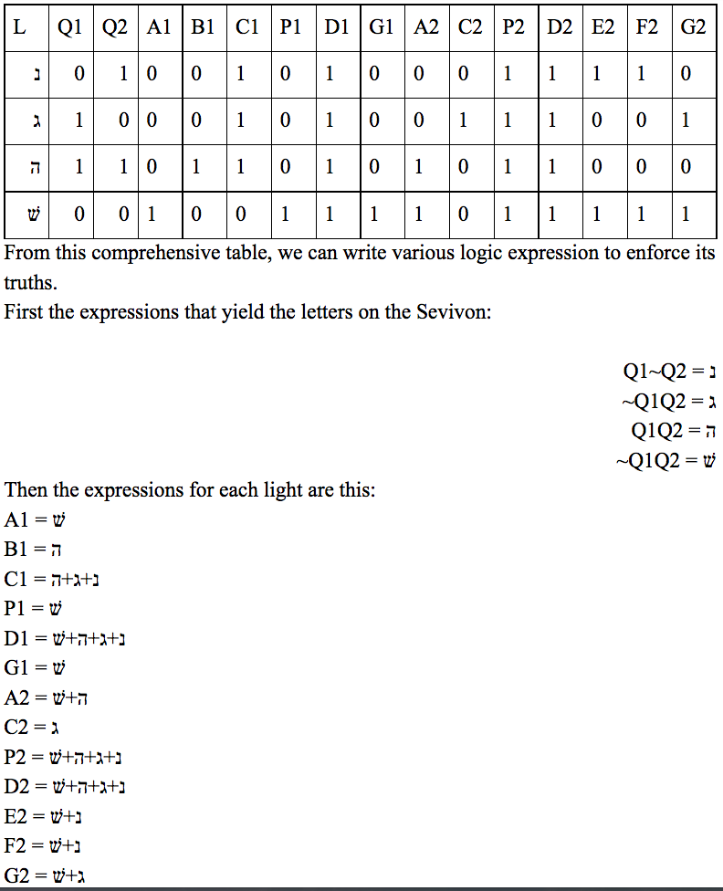

Project 2.1.6 Sevivon
Project Members: Aviram Bhalla-Levine
Class: Digital Engineering
Date: 20 December 2015
Summary: In this project, students were given an opportunity to design and create their own circuit for potential comercial use, provided that the circuit included 3 inputs per person and AOI logic. I chose to recreate the popular game of Dreidel in my circuit. This involved using a clock and D-Flip-Flops to cycle through four bit values, then converting those four bit values into hebrew letters on two seven segment displays using AOI logic.
My Role: As I was the only person in this project, I had to do all of the elements of the project. I thought of the circuit idea, designed the circuit, created logic tables to represent inputs and outputs, wrote logic expressions to convent the logic tables into AOI logic, implemented those logic expressions into circuit diagrams, wired a working circuit as the final solution, and created all the project documentation.
What I learned: I learned that working on a project of such complexity as this one is a very difficult task. Additionally, I learned how to recover from sickness and make up for lost work time after I fell sick for most of the project's allotted time. I also learned that circuits that do even the most simple tasks can quickly become extremely complex and difficult to create and implement.
Images:
Image of the final physical solution, a working breadboard prototype of the circuit with annotations on its various features.
Image of the logic table and expressions used to implement the circuit.